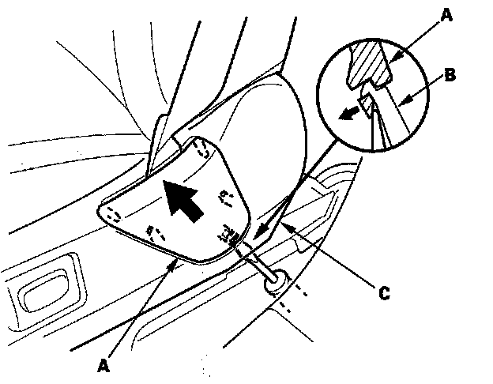
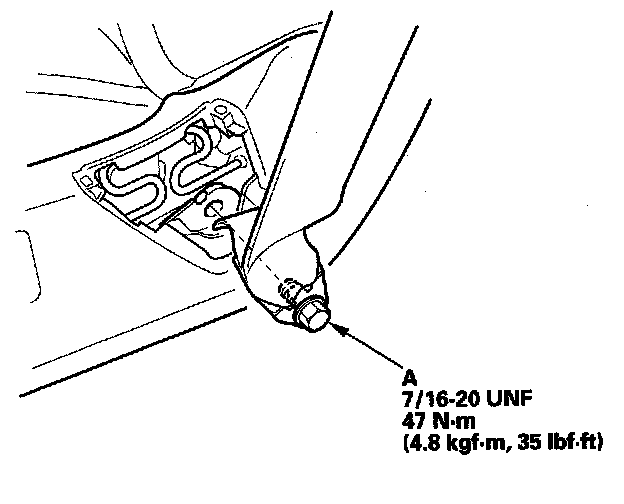
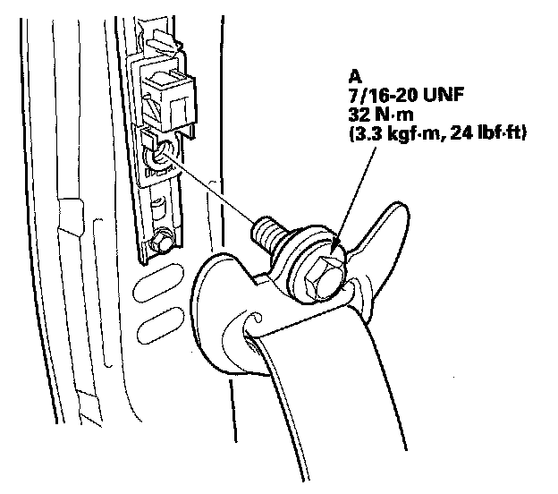
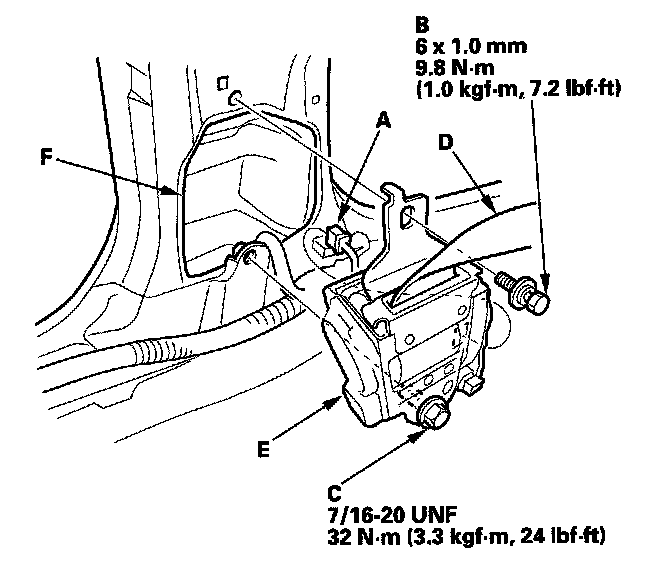
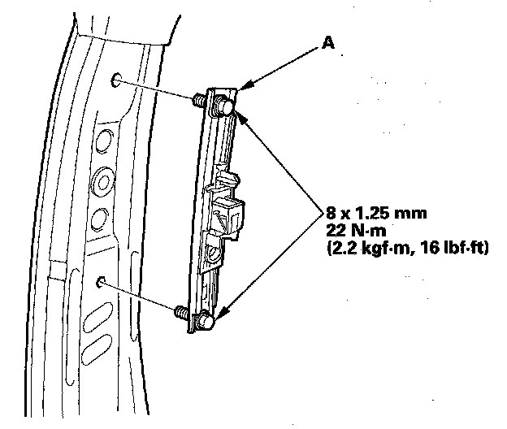
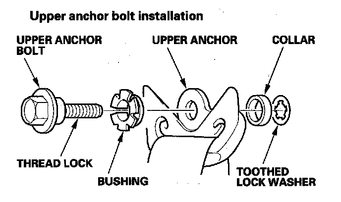
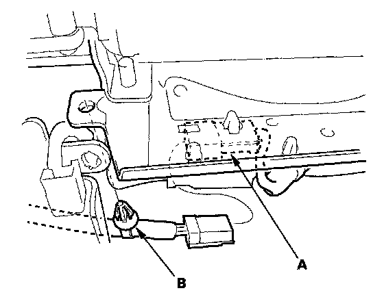
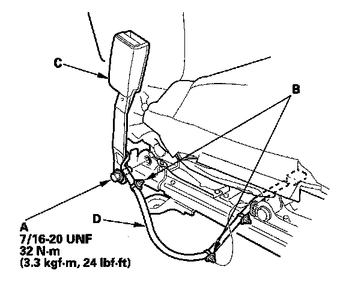
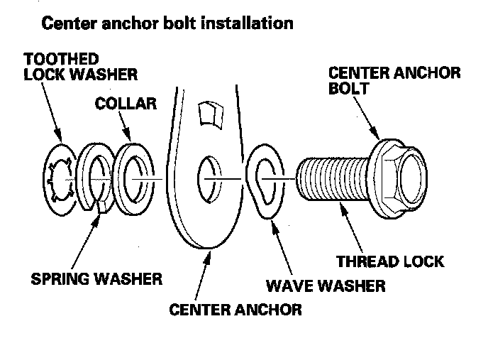

Front Seat Belt Replacement
Front Seat Belt ReplacementSRS components are located in this area. Review the SRS component locations and the precautions and procedures before doing repairs or service.
NOTE: Check the front seat belts for damage, and replace them if necessary.
Front Seat Belt
1. Make sure you have the anti-theft codes for the audio and the navigation system (if equipped).

2. Slide the front seat all the way forward, and adjust the seat to its maximum height. Carefully pry up on the bottom of the anchor cover (A) to release the tab (B) with a small flat-tip screwdriver from below inside the recline cover (C), then remove it.

3. Adjust the seat to its minimum height, then remove the lower anchor bolt (A).
4. Disconnect the negative cable from the battery, and wait at least 3 minutes before removing the front seat belt.
5. Remove the B-pillar lower trim.
6. Remove the B-pillar upper trim.

7. Remove the upper anchor bolt (A).

8. Disconnect the seat belt tensioner connector (A). Remove the upper retractor mounting bolt (B) and the lower retractor bolt (C), then remove the front seat belt (D) and retractor (E).
9. If necessary, remove the front seat belt protector (F).

10. Remove the shoulder anchor adjuster (A).

11. Install the seat belt in the reverse order of removal, and note these items:
- Apply medium strength type liquid thread lock to the anchor bolts before reinstallation.
- Tighten the bolts by hand first, then tighten to the specified torque.
- Check that the retractor locking mechanism functions as described.
- Assemble the washer, collar, and bushing on the upper anchor bolt as shown.
- If the seat belt tensioner has been deployed, replace the front seat belt protector with a new one.
- Before installing the anchor bolts, make sure there are no twists or kinks in the seat belt.
- Make sure the seat belt tensioner connector is properly plugged in.
- Reconnect the negative cable to the battery.
- Enter the anti-theft codes for the audio and the navigation system (if equipped).
- Set the clock.
- Check for any DTCs that may have been set during repairs, and clear them.
- Do the steering column position memorization.
Seat Belt Buckle
1. Make sure you have the anti-theft codes for the audio system and the navigation system (if equipped).
2. Disconnect the negative cable from the battery, and wait at least 3 minutes before beginning work.
3. Remove the front seat.
4. Remove the center cover.

5. Lift up the front seat, then disconnect the seat belt buckle switch connector (A) and detach the harness clip (B). The driver's seat is shown; the passenger's seat is similar.

6. Remove the center anchor bolt (A) and detach the harness clips (B), then remove the seat belt buckle (C).
7. Pull the seat belt buckle switch harness (D) out through the space between the seat cushion and the seat linkage.

8. Install the buckle in the reverse order of removal, and note these items:
- Assemble the washers on the center anchor bolt as shown.
- Apply medium strength type liquid thread lock to the center anchor bolt before reinstallation.
- Tighten the bolts by hand first, then tighten to specification with a torque wrench.
- Make sure the seat belt buckle switch connector is plugged in properly.
- Reconnect the negative cable to the battery.
- Enter the anti-theft codes for the audio system and the navigation system (if equipped).
- Set the clock.
- Check for any DTCs that may have been set during repairs, and clear them.
- Do the steering column position memorization.